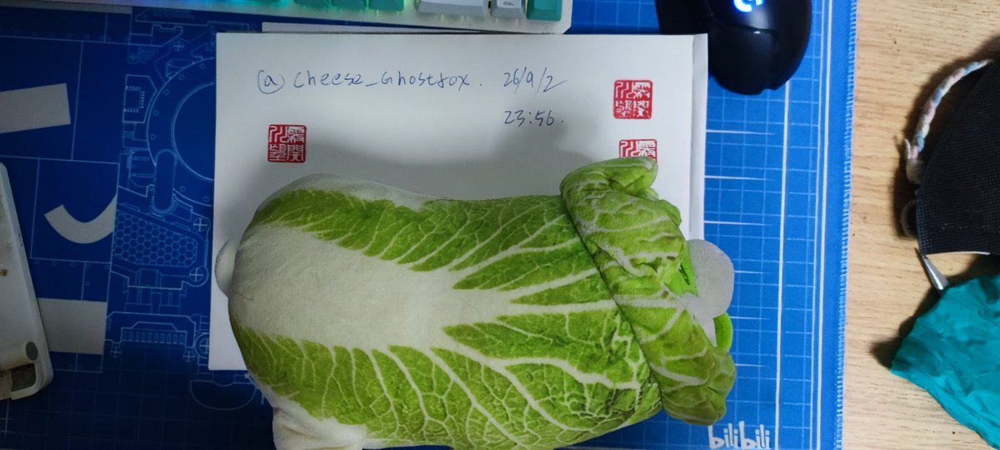
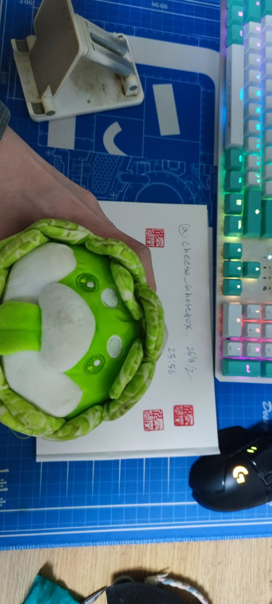
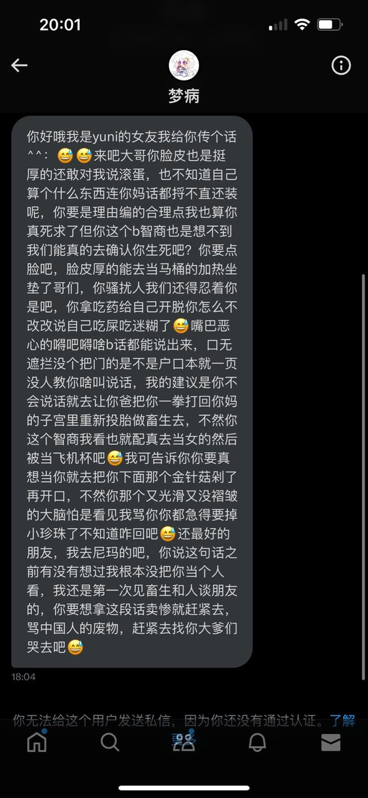
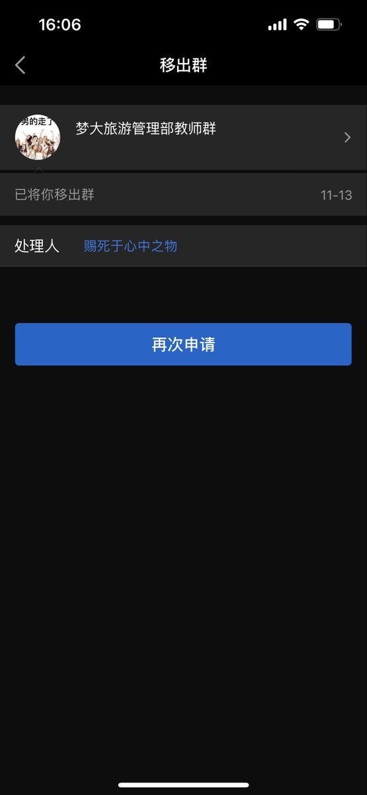
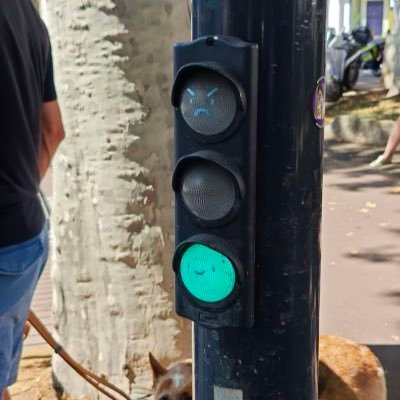

☯️🧬霊狐製作所 公式ツイッター
@Cheese_Ghostfox
呃...狐恰好有其中一件被宣称为「运药工具」的物品原件喵
狐的检查结论是无明显拆装藏匿痕迹，结构缝线均完好无损，填充均匀无空腔
综上，狐认为对于她玩偶藏药运输的指控不成立喵
(此物品在至少一月前就已经被她作为礼物赠送给狐了)





frac
@proselyte31
@guanhe62892723 @Moucky2333 别信他的鬼话，拿个玩偶盒的图片就说里面都是药片，1.我记得你们不是说我22年就开始了吗，怎么现在又变成24年了2.moucky，你为什么回避在23年2月和EPMP服务器成员私聊围攻我的事情？3.先骚扰我和我朋友的是你，moucky，我只是讨回自己的公道和为自己辩解，还有，你拿yuni当初 https://t.co/9905SthMGD